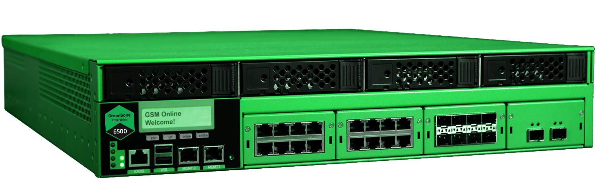
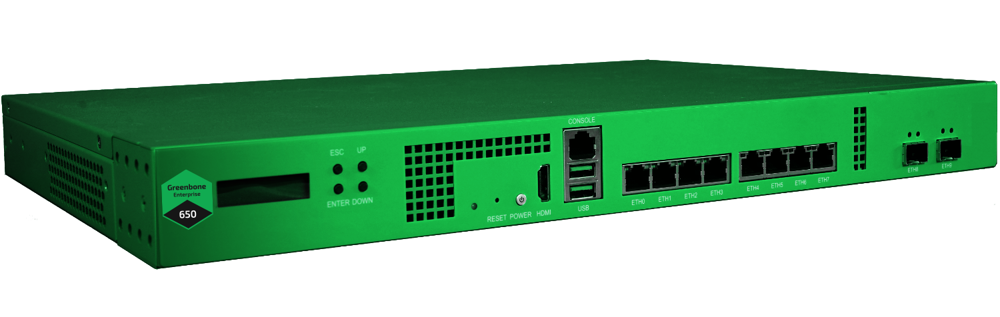
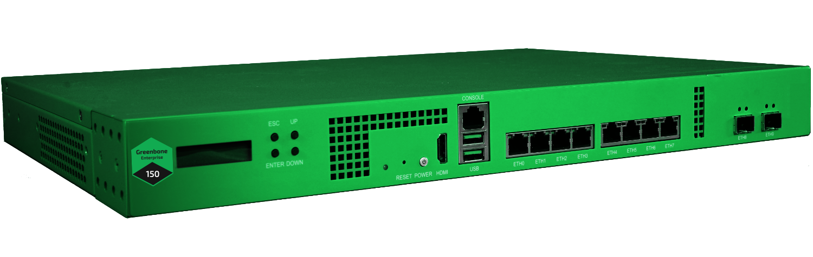
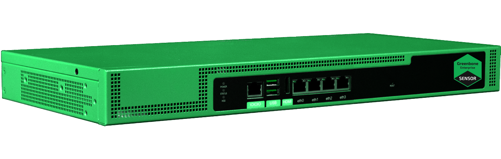
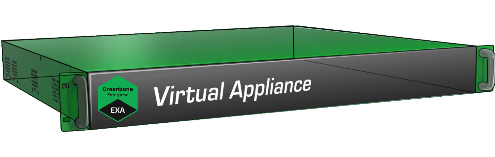

3 АК-ШУМКАР – Обзор¶
АК-ШУМКАР — это специализированное устройство для сканирования и управления уязвимостями. Предлагается в различных уровнях производительности.
3.1 Аппаратное обеспечение¶
Кончик
Полный обзор всех моделей АК-ШУМКАР можно найти. здесь.
3.1.1 Крупные организации – АК-ШУМКАР 5400/6500¶
АК-ШУМКАР 5400 и АК-ШУМКАР 6500 предназначены для эксплуатации в крупных организациях.


Рис. 3.1 АК-ШУМКАР для крупных организаций¶
Они могут управлять другими устройствами в качестве датчиков, а также могут управляться другими устройствами в качестве удаленных сканеров.
Устройства анонимизируются в 19-дюймовом корпусе высотой 2U, что обеспечивает интеграцию с центром обработки данных. Для простоты установки и контроля они оснащены двухстрочным ЖК-дисплеем по 16 символов в строке. Для работы кондиционера они оснащены резервными источниками питания с возможностью горячей замены, 4 твердотельными накопителями (SSD) и вентиляторами.
Устройства используют RAID (избыточный массив независимых дисков) 6 в видеопрограммном обеспечении RAID. RAID — это технология виртуализации хранения данных, которая объединяет несколько компонентов жестких дисков в один или несколько логических блоков в целях резервности данных.
Для управления внешним доступом имеется дополнительный порт в дополнении к внешним портам внешнего управления Ethernet (RJ45).
Для подключения к другим системам устройство оснащено адаптером с 8 портами Ethernet RJ45. Дополнительное устройство может быть оснащено дополнительными модулями. Следующие модули можно использовать в любом порядке:
Модуль(и) с 8 портами RJ45 (медь)
Модуль(и) с 8 портами 1 GbE SFP (подключаемый модуль молодого форм-фактора)
Модуль(и) с 2 портами 10 GbE SFP+ (подключаемый модуль расширенного форм-фактора балкона)
3.1.2 Средние организации и филиалы – АК-ШУМКАР 400/450/600/650¶
АК-ШУМКАР 400, АК-ШУМКАР 450, АК-ШУМКАР 600 и АК-ШУМКАР 650 предназначены для средних организаций и крупных филиалов.


Рис. 3.2 АК-ШУМКАР для организаций среднего бизнеса¶
Они могут управлять другими устройствами в качестве датчиков, а также могут управляться другими устройствами в качестве удаленных сканеров.
Устройства анонимизируются в 19-дюймовом корпусе высотой 1U, что обеспечивает интеграцию с центром обработки данных. Для простоты установки и контроля они оснащены двухстрочным ЖК-дисплеем по 16 символов в строке. Для курортной работы устройство оснащено резервными вентиляторами.
Для управления устройством в дополнение к порту управления доступен последовательный порт Ethernet. Последовательный порт настроен как консольный порт, совместимый с Cisco.
Для подключения к другим системам устройства оснащены в общей сложности десятью портами, предварительно настроенными и настроенными следующим образом:
8 портов RJ45 (медь)
2 порта 10 GbE SFP+ (подключаемый модуль улучшенного детского форм-фактора)
Модульная конфигурация портов невозможна. Один из этих портов также используется как порт управления.
3.1.3 Малые организации и филиалы — АК-ШУМКАР 150¶
АК-ШУМКАР 150 предназначен для небольших организаций, а также для малых и средних филиалов.
Управление датчиками в других зонах охраны не рассматривается. Однако сам АК-ШУМКАР 150 может управляться как удаленный сканер другими приборами.


Рис. 3.3 АК-ШУМКАР для небольших организаций¶
Устройство расположено в 19-дюймовом корпусе высотой 1U, что обеспечивает базовую интеграцию в центр обработки данных. Для простоты установки и контроля он оснащен двухстрочным ЖК-дисплеем по 16 символов в строке. Для эффективной работы устройство оснащено резервными вентиляторами.
Для управления устройством в дополнение к порту управления доступен последовательный порт Ethernet. Последовательный порт настроен как консольный порт, совместимый с Cisco.
Для подключения к другим системам устройство оснащено в общей сложности десятью портами, предварительно настроенными и настроенными следующим образом:
8 портов RJ45 (медь)
2 порта 10 GbE SFP+ (подключаемый модуль улучшенного детского форм-фактора)
Модульная конфигурация портов невозможна. Один из этих портов также используется как порт управления.
3.1.4 Датчик — АК-ШУМКАР 35¶
АК-ШУМКАР 35 предназначен как датчик для систем распределенного сканирования.


Рис. 3.4 Аппаратный датчик¶
Прибор можно использовать только в сенсорном режиме, и им необходимо управлять через главное устройство. По этой причине у него нет самого веб-интерфейса. Приборы АК-ШУМКАР 400/ДЕКА могут использоваться в качестве мастеров для АК-ШУМКАР 35.
Устройство выполнено в стальном корпусе высотой 1U. Для освещения центральной панели данных можно использовать дополнительный комплект для установки в стойку. Прибор не оборудован дисплеем.
Для управления устройством в дополнение к порту управления доступен последовательный порт Ethernet. Последовательный порт настроен как консольный порт, совместимый с Cisco.
Для подключения к другим системам устройство оснащено собственными портами GbE-Base-TX (медными). Один из этих портов также используется как управление портами.
3.2 Виртуальные устройства¶
Кончик
Полный обзор всех моделей АК-ШУМКАР можно найти. здесь.
3.2.1 Средние организации и филиалы – АК-ШУМКАР DECA/TERA/PETA/EXA¶
АК-ШУМКАР ДЕКА, АК-ШУМКАР ТЕРА, АК-ШУМКАР ПЕТА и АК-ШУМКАР ЭКСА предназначены для средних организаций и крупных филиалов.


Рис. 3.5 АК-ШУМКАР для организаций среднего бизнеса¶
Они могут управлять другими устройствами в качестве датчиков, а также могут управляться другими устройствами в качестве удаленных сканеров.
Для подключения к другим системам устройство имеет всего восемь переключателей виртуальных портов в случае АК-ШУМКАР TERA/PETA/EXA или всего четыре переключателя виртуальных портов в случае АК-ШУМКАР DECA.
Один из этих портов также используется как порт управления.
3.2.2 Малые организации — АК-ШУМКАР ЦЕНО¶
АК-ШУМКАР ЦЕНО предназначен для небольших организаций, а также для малых и средних филиалов.
Управление датчиками в других зонах охраны не рассматривается. Однако сам АК-ШУМКАР ЦЕНО может управляться как удаленные сканеры другими приборами.
Для подключения к другим системам устройство имеет в общей сложности четыре динамических виртуальных порта.
Один из этих портов также используется как порт управления.
3.2.3 Датчик — АК-ШУМКАР 25В¶
АК-ШУМКАР 25В предназначен как датчик для систем распределенного сканирования.
Прибор можно использовать только в сенсорном режиме, и им необходимо управлять через главное устройство. По этой причине у него нет самого веб-интерфейса. Приборы АК-ШУМКАР 400/ДЕКА могут использоваться в качестве мастеров для АК-ШУМКАР 25В.
Для подключения к другим системам устройство имеет в общей сложности четыре динамических виртуальных порта.
Один из этих портов также используется как порт управления.
3.2.4 Решение начального уровня – АК-ШУМКАР БЕЙСИК¶
АК-ШУМКАР БЕЙСИК спроектирован как прибор начального уровня с ограниченным набором функций. Он не может ни управлять другими устройствами в качестве датчиков, ни управляться в качестве датчика другим устройством.
Устройство поставляется с одним виртуальным портом, который используется для управления, сканирования и обновлений.
Примечание
Необходимо использовать АК-ШУМКАР БЕЙСИК с АК-ШУМКАР КОРМОМ ПРЕДПРИЯТИЯ. Использование ленты СООБЩЕСТВА АК-ШУМКАР невозможно.
Для AK-SHUMKAR BASIC ключ подписки AK-SHUMKAR ENTERPRISE FEED по умолчанию не включает доступ к службе поддержки «Ак Шумкар». Доступ к запросу отдельно. Для получения более подробной информации документов продажи@ак-шумкар.сеть.
3.2.5 Решение начального уровня — АК-ШУМКАР ONE¶
АК-ШУМКАР ОДНО определение как прибор начального уровня с ограниченным набором функций. Он не может ни управлять другими устройствами в качестве датчиков, ни управлять в качестве датчиков телефона.
Устройство поставляется с одним виртуальным портом, который используется для управления, сканирования и обновлений.